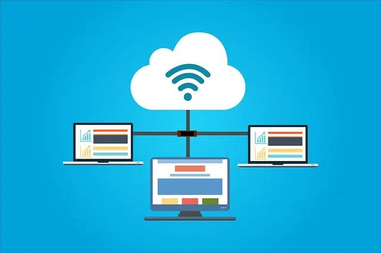

Una red es una estructura que dispone de un patrón que la caracteriza. La noción de informática, por su parte, hace referencia a los saberes de la ciencia que posibilitan el tratamiento de datos de manera automatizada a través de computadoras (ordenadores).Con estos conceptos en claro, podemos comprender a qué se refiere la idea de red informática. Se trata del conjunto de equipos (computadoras, periféricos, etc.) que están interconectados y que comparten diversos recursos.
De acuerdo al tipo de conexión, a la relación entre los elementos y al alcance, es posible calificar una red informática de diferentes formas. Internet, de hecho, es una red informática: millones de computadoras están interconectadas a través de servidores y pueden compartir todo tipo de datos.
Computadoras
Una red informática permite la interconexión de computadoras y periféricos.
Características de una red informática
Estas redes implican la interconexión de los equipos a través de ciertos dispositivos que permiten el envío y la recepción de ondas, las cuales llevan los datos que se desea compartir. En las redes informáticas, por lo tanto, hay emisores y receptores que intercambian mensajes.El objetivo de una red informática es que los ordenadores puedan compartir sus recursos a distancia. De este modo, si en una oficina hay cinco equipos, pueden conectarse en red para que desde cada uno se pueda acceder a los datos de las demás. Si además se conecta una impresora a la red, también será posible imprimir documentos desde cualquiera de ellos.
Lugar de trabajo
Los equipos de una oficina suelen estar conectados a una red informática.
Reducción de costes
Otro de los fines de una red informática es la reducción de costes; en muchas compañías, los equipos que utilizan sus empleados no son más que nodos que se comunican constantemente con un gran servidor, el verdadero responsable del procesamiento de los datos y de enviar respuestas a los primeros para que los usuarios puedan aprovechar la información resultante y llevar a cabo sus tareas.Si en un caso como éste no se utilizara una red sino que se dotara a cada trabajador de un ordenador capaz de realizar todo el trabajo de forma independiente, la inversión de la empresa debería ser mayor, no solamente a la hora de comprar los equipos sino de mantenerlos, ya que la complejidad de cada uno sería mayor que la de los nodos.
Componentes de una red informática
Para que una red informática pueda desarrollarse, se necesita que las computadoras dispongan de una tarjeta de red (también conocida como placa de red). Este dispositivo de hardware permite el envío y la recepción de paquetes de datos.A grandes rasgos, los componentes básicos para crear una red informática son el hardware (los equipos y la parte física), el software (la parte lógica) y los protocolos (modelos y estándares que sirven para determinar cómo deben funcionar la red). Con respecto a la parte física, es posible distinguir entre los dispositivos de usuario final (ordenadores y periféricos que ofrecen servicios al usuario de forma directa) y los de red (todos los que se se interconectan para permitir que los primeros se comuniquen entre sí).
En el plano del software encontramos los siguientes dos componentes de una red informática: